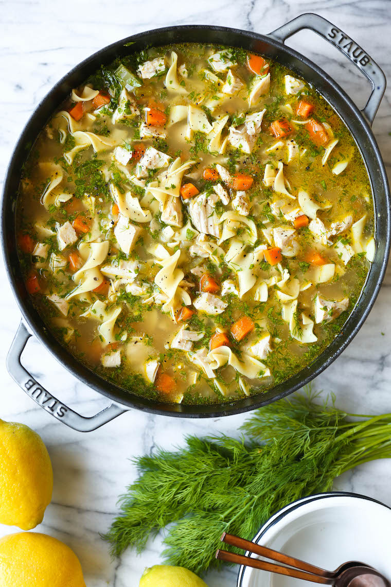

Chicken Soup

Description
This is a great recipe for a cold day or when you're stuck in bed sick. This chicken soup will
heal you from all the stress of your day. You won't get enough of it! It takes minimal prep time however it does
take some time to cook, but once everything is in the pot all you have to do is wait.
Ingredients
- 2 tablespoons unsalted butter
- 1 onion, diced
- 2 carrots, peeled and diced
- 2 celery ribs, diced
- 3 cloves garlic, minced
- 8 cups chicken stock
- 2 bay leaves
- Kosher salt freshly ground black pepper, to taste
- 2 1/2 pounds bone-in, skinless chicken breasts
- 2 1/2 cups wide egg noodles
- 2 tablespoons chopped fresh parsley leaves
- 2 tablespoons chopped fresh dill
- 1 tablespoon freshly squeezed lemon juice, or more, to taste
Steps
- Melt butter in a large stockpot or Dutch oven over medium heat. Add onion, carrots and celery.
Cook, stirring occasionally, until tender, about 3-4 minutes. Stir in garlic until fragrant, about 1 minute.
- Whisk in chicken stock and bay leaves; season with salt and pepper, to taste.
Add chicken and bring to boil; reduce heat and simmer, covered, until the chicken is cooked through,
about 30-40 minutes. Remove chicken and let cool before dicing into bite-size pieces, discarding bones.
- Stir in chicken and pasta and cook until tender, about 6-7 minutes.
- Remove from heat; stir in parsley, dill and lemon juice; season with salt and pepper, to taste.
- Serve immediately.